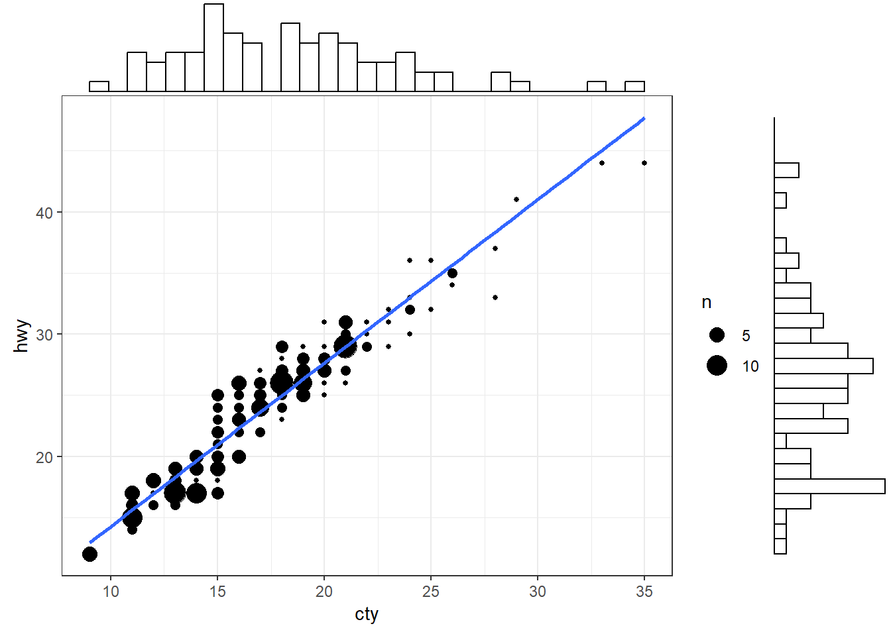
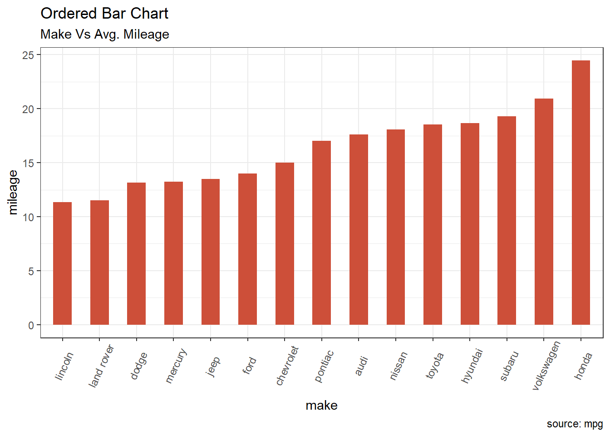
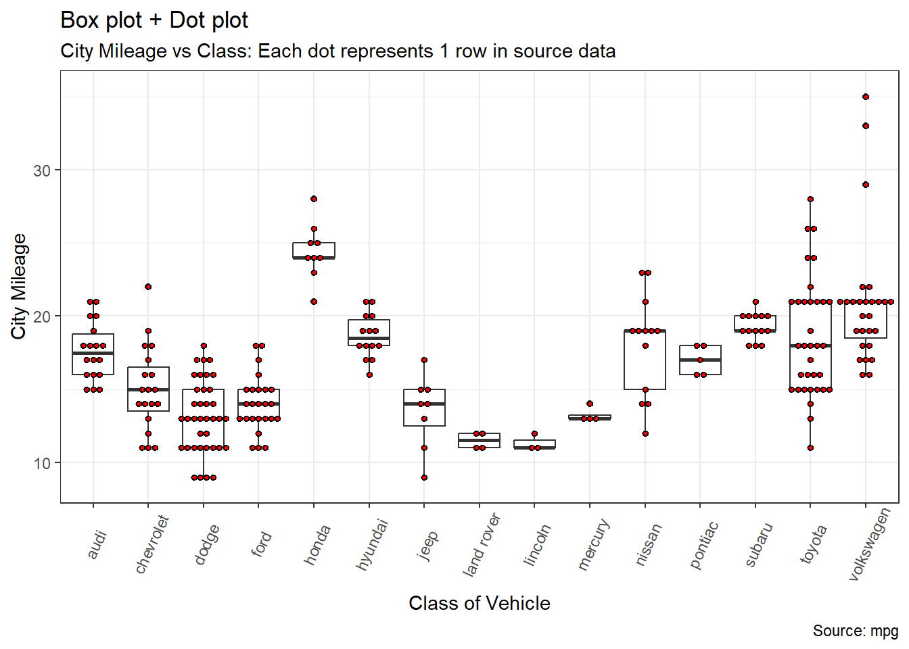

# R-code
# Can be hidden by changing echo: false in qmd setings or yml settings
1 + 1[1] 2Create New Project in R Studio . . . New Directory . . . Quarto Website . . . check ‘Create a git repository’ (cannot be a folder within another repository)
In _quarto.yml, add “output-dir: docs” under “project”; other universal options can be set here
Build . . . Render Website
In parent folder ensure a .nojekyll file is created in parent folder
Push updates to GitHub
In GitHub settings for the repository, click on Pages . . . Deploy from Branch, main/docs . . . save
URL will be username.github.io/repository name
This is a Quarto website.
To learn more about Quarto websites visit https://quarto.org/docs/websites.
https://r-statistics.co/Top50-Ggplot2-Visualizations-MasterList-R-Code
(tabset example)
#library(ggplot2)
#install.packages("ggExtra")
library(ggExtra)
data(mpg, package="ggplot2")
# mpg <- read.csv("http://goo.gl/uEeRGu")
# Scatterplot
theme_set(theme_bw()) # pre-set the bw theme.
mpg_select <- mpg[mpg$hwy >= 35 & mpg$cty > 27, ]
g <- ggplot(mpg, aes(cty, hwy)) +
geom_count() +
geom_smooth(method="lm", se=F)
ggMarginal(g, type = "histogram", fill="transparent")
# Prepare data: group mean city mileage by manufacturer.
cty_mpg <- aggregate(mpg$cty, by=list(mpg$manufacturer), FUN=mean) # aggregate
colnames(cty_mpg) <- c("make", "mileage") # change column names
cty_mpg <- cty_mpg[order(cty_mpg$mileage), ] # sort
cty_mpg$make <- factor(cty_mpg$make, levels = cty_mpg$make) # to retain the order in plot.
library(ggplot2)
theme_set(theme_bw())
# Draw plot
ggplot(cty_mpg, aes(x=make, y=mileage)) +
geom_bar(stat="identity", width=.5, fill="tomato3") +
labs(title="Ordered Bar Chart",
subtitle="Make Vs Avg. Mileage",
caption="source: mpg") +
theme(axis.text.x = element_text(angle=65, vjust=0.6))
#Boxplot
g <- ggplot(mpg, aes(manufacturer, cty))
g + geom_boxplot() +
geom_dotplot(binaxis='y',
stackdir='center',
dotsize = .5,
fill="red") +
theme(axis.text.x = element_text(angle=65, vjust=0.6)) +
labs(title="Box plot + Dot plot",
subtitle="City Mileage vs Class: Each dot represents 1 row in source data",
caption="Source: mpg",
x="Class of Vehicle",
y="City Mileage")
| Col1 | Col2 | Col3 |
|---|---|---|
| 1 | 3 | 6 |
| 2 | 4 | 7 |
| 3 | 5 | 8 |
library(tidyverse)
library(gapminder)
library(reactable)
gapminder %>%
select(country, year, lifeExp) %>%
mutate(country = as.character(country)) %>%
pivot_wider(
id_cols = country,
names_from = year,
values_from = lifeExp
) %>%
select(country, '1952', '1972', '1992') %>%
rename(Country = country)%>%
reactable()